컴퓨터활용능력-1급 (2010-06-06 기출문제)
1과목: 컴퓨터 일반
1. 다음 중 전송 오류 검출 방식이 아닌 것은?
- CRC 방식
- 패리티 검사 방식
- 정마크 부호 방식
- CSMA/CD 방식
(정답률: 56%)

2. 다음 중 한글 Windows XP에서 [제어판]-[관리도구]에 있는 [컴퓨터 관리]의 대화상자를 이용하여 수행할 수 있는 작업으로 옳지 않은 것은?
- 디스크 관리에서 디스크의 포맷, 드라이브 문자 할당과 같은 작업을 수행할 수 있다.
- 작업 관리자를 이용하여 시스템 끄기나 다시 시작을 수행할 수 있다.
- 장치 관리자를 사용하여 하드웨어 장치의 드라이버나 소프트웨어를 업데이트하고 하드웨어 설정을 수정할 수 있으며 문제를 해결할 수 있다.
- 디스크를 분석하고 조각난 파일과 폴더를 찾아 통합하는 작업을 할 수 있다.
(정답률: 41%)
3. 다음 중 호스트나 라우터의 오류상태 통지 및 예상치 못한 상황에 대한 정보를 제공할 수 있게 하는 인터넷 프로토콜로 옳은 것은?
- ICMP
- ARP
- RARP
- IP
(정답률: 45%)
4. 다음 중 한글 Windows XP의 [디스플레이 등록 정보] 창에 관한 설명으로 옳지 않은 것은?
- [화면 보호기] 탭의 [모니터 전원] 항목에서 에너지를 절약하기 위한 [전원 옵션]을 지정할 수 있다.
- [설정] 탭에서 바탕 화면 구성의 테마를 설정할 수 있다.
- [화면 배색] 탭에서 화면에 나타나는 메뉴 및 제목 표시줄의 글꼴을 크게 나타나도록 설정할 수 있다.
- [바탕 화면] 탭에서 배경 화면으로 사용할 그림을 지정할 수 있다.
(정답률: 37%)
5. 다음 중 컴퓨터에서 사용되는 운영체제에 관한 설명으로 옳지 않은 것은?
- 사용자에게 편리함을 제공하고, 시스템의 생산성을 높여주는 역할을 한다.
- 주 기능은 프로세스, 기억장치, 주변장치, 파일 등의 관리이다.
- 중앙처리장치, 기억장치, 입출력장치로 구성되어 계산을 위한 기본적인 자원을 제공한다.
- 제어 프로그램과 서비스 프로그램으로 구성된다.
(정답률: 50%)
6. 다음 중 컴퓨터 그래픽과 관련하여 보기에서 설명하고 있는 그래픽 파일의 형식은?
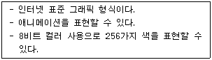
- GIF
- JPG
- PNG
- MPEG
(정답률: 70%)
7. 다음 중 한글 Windows XP의 [검색 결과] 창에서 파일이나 폴더를 추가로 검색하기 위한 조건에 관한 설명으로 옳지 않은 것은?
- 검색하고자 하는 파일이나 폴더의 위치가 예상되는 드라이브나 폴더의 위치를 지정하여 검색할 수 있다.
- 전체 또는 일부 파일 이름을 사용하여 파일이나 폴더를 검색할 수 있으며, 특정 단어 또는 문장을 포함하는 파일을 검색할 수 있다.
- 마지막으로 수정된 날짜로 예상되는 시작 날짜와 끝 날짜의 범위를 지정하여 파일을 검색할 수 있다.
- 시스템 폴더나 숨김 파일을 검색하거나 사용자 계정을 조건으로 지정하여 파일을 검색할 수 있다.
(정답률: 57%)
8. 다음 중 공개 키 암호기법의 설명으로 옳지 못한 것은?
- 메시지를 암호화할 때와 복호화 할 때 사용되는 키가 서로 다르다.
- 복호화 할 때 사용되는 키는 공개하고 암호 키는 비공개한다.
- 비대칭 키 또는 이중 키 암호 기법이라고도 한다.
- 많이 사용되는 기법은 RSA 기법이다.
(정답률: 62%)
9. 다음 중 CD, HDTV 등에서 동영상을 표현하기 위한 국제 표준 압축 방식은?
- MPEG
- JPEG
- GIF
- PNG
(정답률: 78%)
10. 다음 중 컴퓨터 프로그래밍 언어인 Java 언어에 대한 설명으로 옳지 않은 것은?
- 객체 지향 언어로 추상화, 상속화, 다형성과 같은 특징을 가진다.
- 수식처리를 비롯하여 기호 처리 분야에 사용되고 있으며 특히 인공 지능 분야에 널리 사용되고 있다.
- 네트워크 환경에서 분산 작업이 가능하도록 설계되었다.
- 특정 컴퓨터 구조와 무관한 가상 바이트 머신코드를 사용하므로 플랫폼이 독립적이다.
(정답률: 52%)
11. 다음 중 인터넷을 이용한 FTP(File Transfer Protocol)에 관한 설명으로 옳지 않은 것은?
- 멀리 떨어져 있는 컴퓨터로부터 파일을 전송 받거나 전송하는 서비스를 의미한다.
- 익명의 계정을 이용하여 파일을 전송할 수 있는 서버를 Anonymous FTP 서버라고 한다.
- FTP 서버에 계정을 가지고 있는 사용자는 FTP 서버에 있는 프로그램을 다운로드 없이 실행시킬 수 있다.
- 일반적으로 텍스트 파일의 전송을 위한 ASCII 모드와 실행 파일의 전송을 위한 Binary 모드로 구분하여 수행한다.
(정답률: 68%)
12. 다음 중 한글 Windows XP의 [폴더 옵션] 창에서 [파일 형식] 탭에 대한 설명으로 옳지 않은 것은?
- 드라이브, 파일, 폴더 등의 등록된 파일형식을 볼 수 있다.
- 등록된 파일 형식에 대한 설정은 [편집] 단추에서 변경할 수 있다.
- [새로 만들기] 단추를 클릭하면 파일 확장명과 연결된 파일 형식을 지정할 수 있다.
- [고급] 단추를 클릭하면 등록된 파일 형식의 아이콘을 변경할 수 있다.
(정답률: 29%)
13. 다음 중 컴퓨터에 윈도우용 프로그램의 명령줄에서 Windows Installer의 작업을 설치하고 수정하는 명령어는?
- msconfig
- msiexec
- msinfo32
- mode
(정답률: 41%)
14. 다음 중 컴퓨터의 기억장치에 관한 설명으로 옳지 않은 것은?
- 캐시 메모리(cache memory)는 CPU와 주기억장치 사이에 위치하여 컴퓨터의 처리 속도를 향상 시키는 역할을 하며 주로 동적 램(DRAM)을 사용한다.
- 가상 메모리(virtual memory)는 하드디스크의 일부를 주기억장치처럼 사용하는 것으로 주기억장치보다 큰 프로그램을 실행시킬 수 있다.
- 버퍼 메모리(buffer)는 두 개의 장치가 데이터를 주고받을 때 생기는 속도 차이를 해결하기 위하여 중간에 데이터를 임시로 저장해 두는 공간이다.
- 연관 메모리(associative memory)는 저장된 내용의 일부를 이용하여 기억장치에 접근하여 데이터를 읽어 오는 기억장치이다.
(정답률: 53%)
15. 다음 중 컴퓨터의 유지보수와 관련하여 컴퓨터에서 발생하는 문제를 예방하기 위한 설명으로 옳지 않은 것은?
- 시스템에 문제가 발생할 것을 대비하여 부팅 디스켓을 만들어 둔다.
- 정기적으로 컴퓨터 바이러스 치료 프로그램을 업그레이드하고 실행한다.
- 파일의 복원을 편리하게 하기 위하여 정기적으로 하드디스크의 파티션을 새로이 설정한다.
- 프로그램의 정상적인 제거를 위하여 [프로그램 추가/제거]를 이용한다.
(정답률: 72%)
16. 다음 중 윈도우 XP의 프린터 속성에서 확인할 수 있는 항목으로 가장 거리가 먼 것은?
- 프린터 포트
- 인쇄중인 문서 이름
- 최대 해상도
- 사용 가능한 용지
(정답률: 36%)
17. 다음 중 VPN의 주요 기능에 대한 설명으로 옳은 것은?
- 데이터 기밀성 : 데이터의 송수신 도중 데이터의 내용이 변경되지 않았음을 보장하는 기능
- 데이터 근원 인증 : 수신측이 수신한 데이터가 원래의 송신자에 의해서 전송되어졌음을 확인할 수 있는 기능
- 데이터 무결성 : 데이터를 전송 도중 데이터의 내용을 임의의 다른 사용자가 보았을 때 그 내용을 파악하지 못하도록 하는 기능
- 접근 제어 : 전송할 데이터를 특정 프로토콜로 캡슐화하여 송수신하는 기능
(정답률: 49%)
18. 다음 중 보기의 네트워크 장비와 관련된 OSI 7계층으로 옳은 것은?
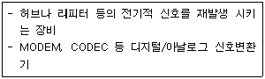
- 물리 계층
- 데이터 링크 계층
- 네트워크 계층
- 전송계층
(정답률: 59%)
19. 다음 중 컴퓨터에서 사용되는 자료구조형태에서 스택(Stack)에 관한 설명으로 옳은 것은?
- 가장 마지막에 저장된 데이터가 가장 먼저 호출되는 후입선출 방식으로 데이터를 관리하는 자료구조이다.
- 가장 먼저 저장된 데이터가 가장 먼저 호출되는 선입선출 방식으로 데이터를 관리하는 자료구조이다.
- 노드로 표현되는 각각의 자료는 링크에 선형으로 연결된 자료구조이다.
- 부모와 자식과 같은 관계를 가지는 노드와 연결을 위한 링크로 구성된 자료구조이다.
(정답률: 48%)
20. 다음 중 한글 윈도우즈 XP에서의 인쇄 작업에 대한 설명으로 옳지 않은 것은?
- 이미 설치한 프린터를 다른 이름으로 다시 설치할 수 있다.
- 프린터 추가에 의해 가장 먼저 설치된 프린터가 공유되어진다.
- 기본 프린터란 인쇄 명령 수행 시 특정 프린터를 지정하지 않을 경우 자동으로 인쇄 작업이 전달되는 프린터로 하나만 지정할 수 있다.
- 네트워크 프린터를 사용할 때는 프린터의 공유 이름과 프린터가 연결되어 있는 컴퓨터의 이름을 알아야 한다.
(정답률: 53%)
2과목: 스프레드시트 일반
21. 다음 중에서 윗주에 대한 설명으로 옳지 않은 것은?
- 윗주는 셀에 대한 주석을 설정하는 것으로 문자열 데이터가 입력되어 있는 셀에만 표시할 수 있다.
- 윗주는 삽입해도 바로 표시되지 않고 [서식]-[윗주 달기]-[표시/숨기기]를 선택해야만 표시된다.
- 윗주에 입력된 텍스트 중 일부분의 서식을 별도로 변경할 수 있다.
- 셀의 데이터를 삭제하면 윗주도 함께 삭제된다.
(정답률: 48%)
22. 다음 중 두 개의 데이터 집합에서 최적의 조합을 찾고자 할 때 유용한 차트는?
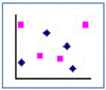
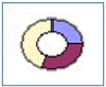
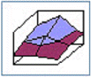
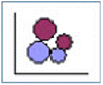
(정답률: 47%)
23. 아래 시트를 출력할 경우 K열이 한 페이지를 벗어나서 4 페이지로 출력된다. [A1:K20] 의 모든 셀 범위가 한 페이지에 출력하도록 하기 위한 속성 설정으로 올바른 것은?
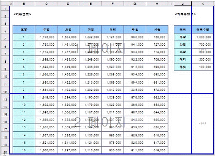
- [축소 확대/배율]을 100%로 한다.
- [자동 맞춤]의 용지 너비를 '1'로 하고 [용지 높이]를 공백으로 한다.
- [자동 맞춤]의 용지 너비를 공백으로 하고 [용지 높이]를 '1'로 한다.
- [자동 맞춤]의 용지 너비를 '1'로 하고 [용지 높이]를 '1'로 한다.
(정답률: 62%)
24. 다음 중 엑셀에서 사용하는 이름에 대한 설명으로 옳지 않은 것은?
- 'A1'처럼 셀 주소와 같은 형태의 이름을 사용할 수 있다.
- 이름의 첫 글자는 문자나 밑줄(_)만 쓸 수 있고, 나머지 글자는 문자, 숫자, 밑줄(_), 마침표(.)를 사용할 수 있다.
- 같은 통합 문서에서 동일한 이름을 중복하여 사용할 수 없다.
- 이름 상자의 화살표 단추를 누르고 정의된 이름 중 하나를 클릭하면 해당 셀 또는 셀 범위가 선택된다.
(정답률: 35%)
25. 다음 중 배열 상수에 관한 설명으로 옳지 않은 것은?
- 텍스트는 큰 따옴표(" ")로 묶어야 한다.
- {110,20,30,40} 과 같이 입력이 된 경우는 4행 1열 참조와 동일한 것이다.
- 배열 상수에 정수, 실수, 지수형 서식의 숫자를 사용 할 수 있다.
- 배열 상수로 숫자, 텍스트, TRUE나 FALSE와 같은 논리값, #N/A와 같은 오류 값 등을 사용할 수 있다.
(정답률: 50%)
26. 다음 중 날짜와 시간 저장 방법에 대한 설명으로 옳지 않은 것은?
- 날짜는 일련번호로 저장되고 시간은 하루에 대한 비율로 간주되어 소수로 저장된다.
- 기본적으로 셀의 왼쪽에 맞추어 입력되며, 연산 및 대소 비교가 가능하다.
- 날짜를 입력할 때 연도를 00에서 29 사이의 숫자로 입력하면 2000년에서 2029년 사이의 연도가 된다.
- Microsoft Windows XP를 사용하는 경우 Windows 프로그램에서 두 자리 연도를 해석하는 방법을 변경할 수 있다.
(정답률: 43%)
27. 다음 중 데이터 분석을 용이하게 하기 위하여 수행하는 정렬에 관한 설명으로 옳지 않은 것은?(오피스 2007 기준으로 문제를 수정하여 두었습니다.)
- 빈 셀은 오름차순이나 내림차순에서 모두 맨 마지막에 정렬된다.
- 정렬의 첫째 기준은 생략할 수 없으며, 둘째와 셋째 기준은 필요할 때만 지정한다.
- 정렬 옵션을 이용하여 행을 기준으로 열을 정렬하는 작업도 가능하다.
- 사용자 지정 정렬 순서는 둘째 및 셋째 정렬 기준에는 적용할 수 없다.
(정답률: 57%)
28. 다음 중 데이터베이스를 관리하는 기능인 [데이터]-[레코드 관리]에 관한 설명으로 올바른 것은?
- 레코드 관리 기능을 이용하여 새로운 필드를 추가하거나 삭제할 수 있다.
- 표 데이터에서 필드 단위로 데이터를 표시, 입력, 검색, 삭제 등을 수행할 수 있는 기능이다.
- 레코드의 찾기 조건에는 만능 문자로 *와 ?를 사용할 수 있으며 연산자는 =,>,>=,<,<= 를 사용할 수 있다.
- 새롭게 추가한 레코드는 항상 맨 앞에 추가된다.
(정답률: 36%)
29. 다음과 같은 서브 프로시저를 호출하는 방법으로 옳은 것은?
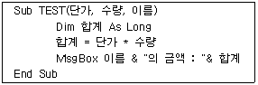
- TEST(200, 500, "이순신")
- TEST 200, 500, "이순신"
- Call TEST 200, 500, "이순신"
- =TEST(200, 500, "이순신")
(정답률: 37%)
30. 다음 중 함수식을 실행하였을 때 나타나는 결과로 옳지 않은 것은 ?
- =SUM(LARGE({9,3,7,8},2),POWER(2,4), MOD(25,3)) → 25
- =AVERAGE(LARGE({9,3,7,8},3),5) → 6
- =MAX(MOD(ABS(-5),3),ABS(MOD(-5,3))) → 2
- =COUNT(1, "가", SMALL({12,3,4},2)) → 3
(정답률: 43%)
31. 다음의 시트에서 직위가 '대리'인 사람의 평균 실적을 배열 수식을 이용하여 계산하였다. 이때, [D9] 셀에 표시되는 수식으로 옳은 것은?
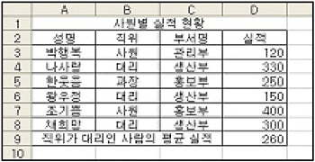
- {=AVERAGE(IF(D3:D8="대리", D3:D8))}
- {=AVERAGE(IF(B3:B8=B4, D3:D8))}
- ={AVERAGE(IF(D3:D8, B3:B8="대리"))}
- ={AVERAGE(IF(B3:B8="대리", D3:D8))}
(정답률: 42%)
32. 워크시트를 인쇄하였더니 출력된 용지의 오른쪽 상단에 '[날짜:2010-01-01]'로 표시되어 있다. 이것에 대한 설명으로 잘못된 것은?
- 머리글의 오른쪽 구역에 '[날짜:&[날짜]]'와 같이 작성하면 된다.
- 워크시트를 작성한 날짜가 2010년 1월 1일인 것을 알 수 있다.
- [파일]-[인쇄 미리 보기]의 [설정] 단추에서 해당 내용을 작성할 수 있다.
- [파일]-[페이지 설정]을 실행하여 해당 내용을 작성할 수 있다.
(정답률: 38%)
33. 다음 VBA 구문에 대한 설명 중 가장 옳은 것은?
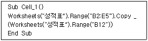
- [성적표] 시트의 [B2:E5]의 범위를 복사한다.
- [성적표] 시트의 [B12] 셀을 복사하여 [B2:E5]의 범위에 붙여넣기를 한다.
- [성적표] 시트의 [B2:E5]의 범위를 복사하여 [B12] 셀에 붙여넣기를 한다.
- [성적표] 시트의 [B2:E5]의 범위와 [B12] 셀의 내용을 병합한다.
(정답률: 63%)
34. 다음 중 피벗 차트 보고서와 표준 차트의 차이점에 대한 설명으로 잘못된 것은?(본 문제는 오피스 2003 기준 문제입니다. 기존정답은 4번이면 여기서는 4번을 누르면 정답 처리 됩니다. 자세한 내용은 해설을 참고하세요.)
- 차트 요소 : 표준 차트의 항목, 계열, 데이터가 피벗차트 보고서에서는 항목 필드, 계열 필드, 값 필드에 해당한다.
- 차트 위치 : 표준 차트는 기본적으로 워크 시트에 포함된 차트로 만들어지나 피벗 차트 보고서는 기본적으로 차트 시트에 만들어진다.
- 원본 데이터 : 표준 차트는 워크시트 셀에 직접 연결되나 피벗 차트 보고서는 관련된 피벗 테이블 보고서에 있는 데이터 형식에 기반을 둔다.
- 항목 이동 또는 크기 조정 : 피벗 차트 보고서와 표준차트 모두 그림 영역, 범례, 차트 제목, 축 제목 등을 이동하거나 그 크기를 조정할 수 있다.
(정답률: 69%)
35. 다음 차트에 대한 설명으로 옳지 않은 것은?
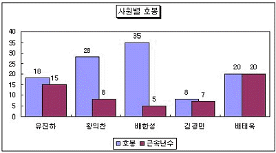
- 데이터 표식 항목 사이에 공백이 있도록 하기 위하여 [간격 너비]에 0보다 큰 값을 입력하였다.
- 데이터 계열 항목 안에서 표식이 겹치도록 하기 위하여 [겹치기]에 항목에 음수를 입력하였다.
- Y(값) 축의 '주 눈금선'이 선택되지 않았다.
- 데이터 레이블이 표시되어 있다.
(정답률: 59%)
36. 아래 시트에서 이진혁의 커피 판매실적[G5:I5]과 녹차판매실적[F6:F8]의 변화에 따른 총수량의 변화를 [데이터]-[표] 기능을 이용하여 [G6:I8] 영역에 표시하고자 한다. 다음 중 위의 작업과정에 대한 설명으로 옳지 않은 것은?
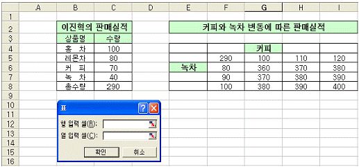
- [C8] 셀과 [F5] 셀은 동일한 의미를 같는 수식이 입력되어야 한다.
- [G6:I8] 셀까지의 수식은 '{=TABLE(C7, C6)}'로 동일하다.
- [G6:I8] 영역을 설정한 후 [데이터]-[표]를 실행한다.
- [표]의 대화상자에서 '열 입력 셀'에 [C6] 셀을, '행 입력 셀'에 [C7] 셀을 지정한다.
(정답률: 33%)
37. 다음 중 새 매크로를 기록할 때의 작성 과정으로 설명이 옳지 않은 것은?
- 매크로 이름에는 공백이 포함될 수 없으며 항상 문자로 시작하여야 한다.
- 절대 참조로 기록된 매크로를 실행하면, 현재 셀의 위치에 따라 매크로가 적용되는 셀이 달라진다.
- '개인용 매크로 통합 문서'로 매크로 저장 위치를 설정하면 엑셀을 실행할 때마다 매크로를 항상 실행할 수 있다.
- 엑셀에서 사용하고 있는 바로 가기 키를 매크로의 바로 가기 키로 지정하면 엑셀에서 사용하던 바로 가기 키는 사용할 수 없다.
(정답률: 38%)
38. 다음 Macro1() 모듈에 대한 설명으로 옳은 것은?
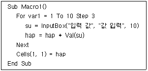
- '값 입력' 입력 대화상자는 3번 나온다.
- 모듈을 실행시킨 현재 셀의 위치에 hap의 값이 표시된다.
- 1부터 10까지의 합이 계산된다.
- 입력 대화상자의 기본 값은 10이다.
(정답률: 36%)
39. 제품코드[A3:A5]의 첫 글자가 제품기호[B8:D8]이고 판매금액은 판매단가*판매수량일 때 판매금액[D3]을 계산하는 수식으로 옳은 것은?
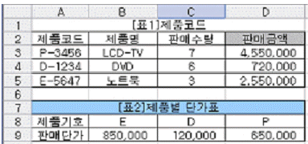
- =VLOOKUP(LEFT(A3,1),$B$8:$D$9,2,0)*C3
- =HLOOKUP(LEFT(A3,1),$B$8:$D$9,2,0)*C3
- =VLOOKUP(MID(A3,1),$B$8:$D$9,2,0)*C3
- =HLOOKUP(MID(A3,1),$B$8:$D$9,2,0)*C3
(정답률: 44%)
40. 다음 그림과 같이 [B1:B3] 셀에 입력된 문자열을 [B4] 셀에서 목록으로 표시하여 입력하기 위한 키 조작으로 올바른 것은?
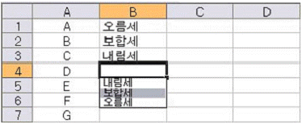
- <Tab>+<↓>
- <Shift>+<↓>
- <Ctrl>+<↓>
- <Alt>+<↓>
(정답률: 56%)
3과목: 데이터베이스 일반
41. 학생(학번, 이름, 학과, 학년) 테이블과 성적(학번, 과목명, 점수) 테이블에 대한 다음의 질의를 SQL 문장으로 바르게 나타낸 것은?
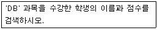
- SELECT 이름, 점수 FROM 학생, 성적 WHERE 과목명 IN('DB')
- SELECT 이름, 점수 FROM 학생, 성적 WHERE 학생.학번= 성적.학번 or 과목명 = 'DB'
- SELECT 이름, 점수 FROM 학생 INNER JOIN 성적 ON 학생.학번 = 성적.학번 WHERE 과목명 in ('DB')
- SELECT 이름, 점수 FROM 학생 WHERE 학번 IN (SELECT 학번 FROM 성적 WHERE 과목명 = 'DB')
(정답률: 34%)
42. 전체 페이지가 5이고 현재 페이지번호가 1일 때 다음 설명 중 옳은 것은?
- 강제로 페이지를 구분하려면 해당 위치에 [페이지 나누기] 컨트롤을 생성하여 놓는다.
- =[Page]/[Pages]& "페이지" 식의 결과는 "1/5 페이지" 이다.
- =Format([Pages], "000")식의 결과는 001이다.
- 보고서를 인쇄하면서 모든 페이지의 아랫부분에 페이지 번호를 출력하고자 하면 보고서의 바닥글을 이용해야 한다.
(정답률: 32%)
43. 제품번호별로 그룹화되어 있는 다음 보고서에서 제품에 대한 정보(네모 안에 들어있는 내용)를 나타내기 위해 가장 적절한 영역은?
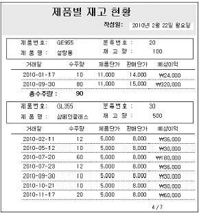
- 보고서 머리글
- 페이지 머리글
- 제품번호 머리글
- 본문
(정답률: 39%)
44. 다음과 같은 보고서를 작성하기 위한 방법으로 가장 옳지 않은 것은? (단, 현재 보고서는 전체 5페이지 중 2번째 페이지이다.)
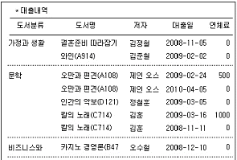
- 1차적으로 '도서분류' 필드를 기준으로 그룹화하였다.
- '도서분류' 머리글에 필드의 이름을 표시할 레이블과 선 컨트롤을 작성하였다.
- '도서분류' 바닥글에 점선을 표시하도록 컨트롤을 작성하였다.
- '도서분류' 컨트롤은 '중복내용 숨기기' 속성을 '예'로 설정하였다.
(정답률: 31%)
45. 폼 보기 상태에서 다음과 같이 폼이 나타나도록 폼 속성을 설정하였다. 가장 옳지 않은 것은?
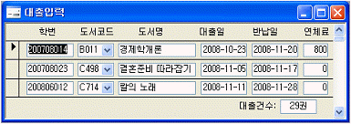
- '구분선' 속성을 '예'로 설정하였다.
- '기본 보기' 속성을 '연속 폼'으로 설정하였다.
- '레코드 선택기' 속성을 '아니오'로 설정하였다.
- '탐색 단추' 속성을 '아니오'로 설정하였다.
(정답률: 46%)
46. 다음과 같은 제어문을 실행하였을 때 Sum의 값은 얼마인가?
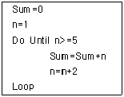
- 3
- 4
- 8
- 9
(정답률: 32%)
47. [제품] 테이블의 '제품명' 필드는 기본 키(PK)가 아니면서도 동일한 값이 두 번 이상 입력되지 않도록 설정하고자 한다. 가장 바람직한 것은?
- 해당 필드에 '중복불가능' 색인(index)을 설정한다.
- 해당 필드에 '입력 마스크' 속성을 설정한다.
- 해당 필드에 '유효성 검사 규칙'을 지정한다.
- 해당 필드에 '빈 문자열 허용'을 '아니오'로 설정한다.
(정답률: 58%)
48. 액세스에서 다음과 같은 폼을 편집하고자 한다. 가장 옳지 않은 것은?
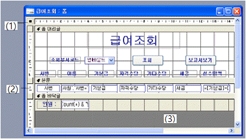
- (1)번 부분을 더블클릭하면 폼의 속성 창을 열 수 있다.
- (2)번의 세로 눈금자를 클릭하면 본문의 모든 컨트롤을 선택할 수 있다.
- (3)번 부분을 더블 클릭하여 폼 바닥글의 배경색을 변경할 수 있다.
- 이런 폼의 기본 보기 속성은 '연속 폼'으로 하는 것이 좋다.
(정답률: 56%)
49. 보고서 인쇄에 관련된 '페이지 설정'에 관한 설명으로 옳지 않은 것은?
- 열 크기에서 '본문과 같게'는 열의 너비와 높이를 보고서 본문의 너비와 높이에 맞춰 인쇄하는 것이다.
- 열 레이아웃은 레코드의 배치 순서를 설정하는 것으로 '열 우선', '행 우선', '사용자 지정' 옵션이 있다.
- '여백' 탭의 '데이터만 인쇄'는 눈금선 및 선이나 사각형 같은 그래픽 개체의 표시 여부를 지정할 수 있다.
- 인쇄할 용지의 크기 및 용지 방향을 지정할 수 있다.
(정답률: 33%)
50. 다음은 보기의 SQL문의 의미를 설명한 것이다. 바르게 설명한 것은?
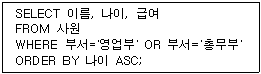
- ORDER BY 절의 ASC는 내림차순으로 정렬하라는 것으로 지정하지 않아도 동일한 결과를 조회한다.
- [사원] 테이블에서 부서가 영업부이거나 총무부인 사원의 이름, 나이, 급여를 검색한 후 나이를 기준으로 내림차순 정렬된 결과를 조회한다.
- WHERE절은 WHERE 부서 IN ('영업부', '총무부')와 같이 지정해도 동일한 결과를 조회한다.
- [사원] 테이블에서 영업부와 총무부를 제외한 사원의 이름, 나이, 급여를 검색한 후 나이를 기준으로 오름차순 정렬된 결과를 조회한다.
(정답률: 52%)
51. 테이블에 잘못된 데이터가 입력되면 이후 많은 문제가 발생한다. 이런 문제를 해결하기 위한 방안으로 점검을 필요로 하는 필드에 요구 사항이나 조건 또는 입력이 가능한 데이터 등을 미리 지정한 후 데이터 입력 시 이를 점검하도록 하는 기능은 다음 중 어느 것인가?
- 기본값
- 필수 여부
- 빈문자열 허용
- 유효성 검사 규칙
(정답률: 71%)
52. 다음 중 액세스의 보고서 작성에 대한 설명으로 가장 옳지 않은 것은?
- 한번 보고서를 작성해 놓으면 데이터가 바뀌는 경우에 해당 데이터에 대한 보고서를 다시 출력할 수 있다.
- 엑셀 데이터와 같은 외부 데이터를 연결한 테이블을 이용하여 보고서를 작성할 수 있다.
- 페이지 설정에서 '데이터만 인쇄'하도록 하는 경우에는 표나 레이블이 미리 인쇄되어 있는 양식지를 이용하여 보고서를 인쇄할 수 있다.
- 텍스트 상자나 콤보 상자와 같은 컨트롤을 이용하는 경우 보고서에서 테이블의 데이터를 수정할 수 있다.
(정답률: 36%)
53. 다음 중 데이터베이스를 이용하는 경우의 장점으로 가장 옳은 것은?
- 데이터 간의 종속성을 유지할 수 있다.
- 데이터 관리 비용을 절감할 수 있다.
- 데이터의 일관성 및 무결성을 유지할 수 있다.
- 데이터를 중복적으로 관리하므로 시스템에 문제가 발생하더라도 복구가 쉽다.
(정답률: 51%)
54. 작성한 폼 개체를 다른 형식으로 내보내려고 한다. 다음 중 지정할 수 있는 형식으로 옳지 않은 것은?
- HTML 문서 파일
- Microsoft Excel 파일
- 서식있는 텍스트 형식 파일
- BMP 혹은 JPG형식의 그림 파일
(정답률: 50%)
55. [도서] 테이블은 도서번호, 도서명, 출판사코드, 대여료 필드로 구성되어 있다. 테이블의 필드를 설정하는 방법에 대한 설명 중 가장 옳지 않은 것은? (단, '도서명'은 항상 입력되지만 '도서번호'는 입력되지 않는 경우도 있으며, '출판사코드'는 [출판사] 테이블의 '출판사' 필드의 외 래키임)
- '도서번호' 필드의 데이터 형식을 문자형으로 하고 기본 키(PK)로 설정하였다.
- '도서명' 필드는 반드시 값을 입력하도록 '필수'로 지정하였다.
- '출판사코드' 필드는 [출판사] 테이블의 '출판사' 필드와 데이터 형식을 일치시켰다.
- '대여료' 필드는 숫자나 통화 형식으로 지정하였다.
(정답률: 54%)
56. [학생] 테이블의 '학번' 필드에 중복된 값이 있어서 기본 키로 설정할 수 없다는 다음과 같은 메시지가 나타났다. 다음 중 학번이 중복된 학생의 정보를 찾는 방법으로 가장 적절한 것은?
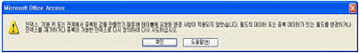
- select * from 학생 where 학번 in (select 학번 from 학생 group by count(*)> 1)
- select * from 학생 where 학번 in (select 학번 from 학생 group by 학번 having count(*)> 1)
- select * from 학생 group by 학번 having count(*)> 1
- select * from 학생 having count(*)> 1 where 학번 in (select 학번 from 학생 group by 학번)
(정답률: 51%)
57. 다음 중 액세스에서의 매크로 기능에 대한 설명으로 가장 옳지 않은 것은?
- 엑셀에서와 같이 사용자가 수행하는 작업에 대한 매크로를 자동적으로 기록해 준다.
- 액세스에서 제공하는 기본적인 매크로 함수를 이용하여 매크로를 작성한다.
- 데이터 베이스 파일을 열 때 매크로를 자동으로 실행 시키려면 매크로 이름을 'AutoExec'로 작성한다.
- 매크로 이름 열에 지정한 바로 가기 키를 이용하여 매크로를 실행할 수 있다.
(정답률: 35%)
58. 데이터베이스 질의를 사용할 때 다양한 특수 연산자가 있어 매우 유용하게 이용되고 있다. 특수 연산자에 대한 설명으로 가장 잘못된 것은?
- in 연산은 or 연산을 수행한 결과와 같다.
- between 연산은 and 연산을 수행한 결과와 같다.
- like 연산자를 사용하면 특정한 문자로 시작하는 결과를 검색할 수 있다.
- where 번호 between 1 and 3하면 1은 포함되고 3은 포함되지 않는다.
(정답률: 64%)
59. 다음 중 선택한 필드에서 중복되는 결과 값은 한 번만 표시할 수 있도록 하는 SELECT 문의 조건부로 옳은 것은?
- DISTINCT
- UNIQUE
- ONLY
- *
(정답률: 62%)
60. 다음 중 Access에서 데이터를 찾거나 바꿀 때 사용하는 만능 문자를 사용한 결과에 대한 설명이 옳지 않은 것은?
- 1#3 → 103, 113, 123 등 검색
- 소?자 → 소비자, 소유자, 소개자 등 검색
- 소[!비유]자 → 소비자와 소개자 등 검색
- b[a-c]d → bad와 bbd 등 검색
(정답률: 70%)